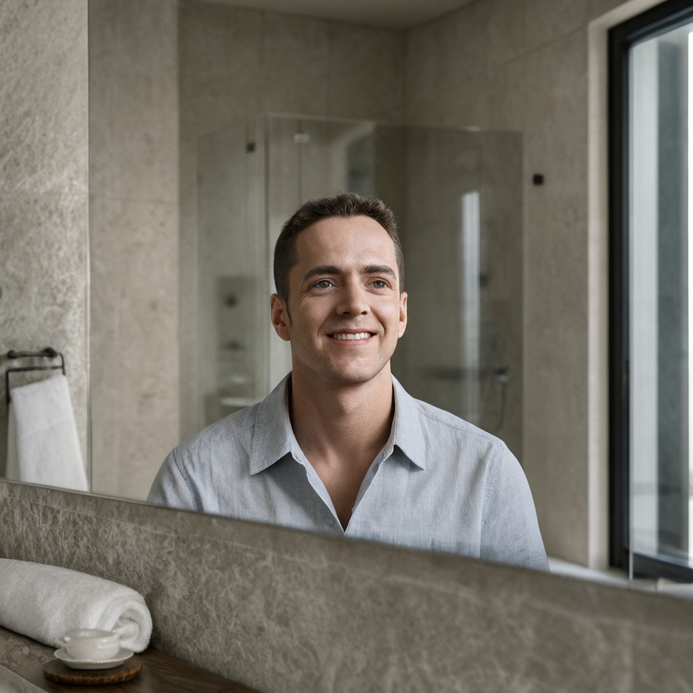
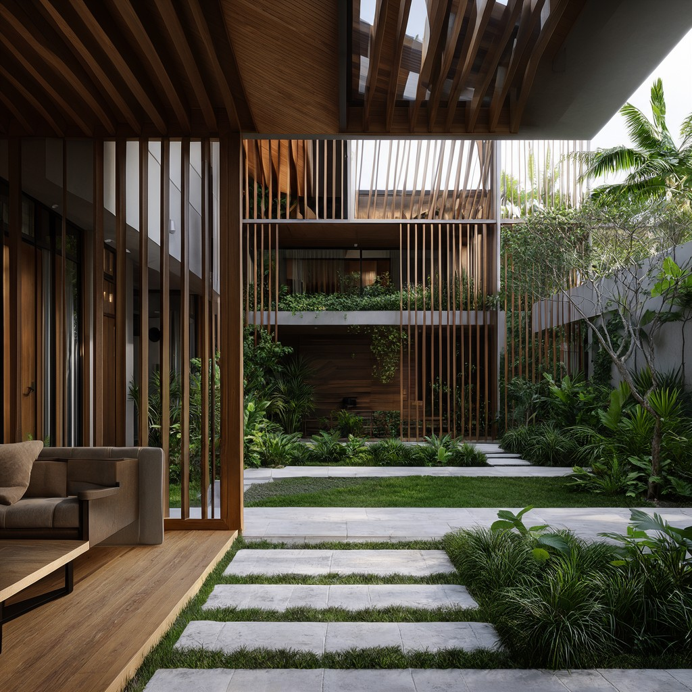
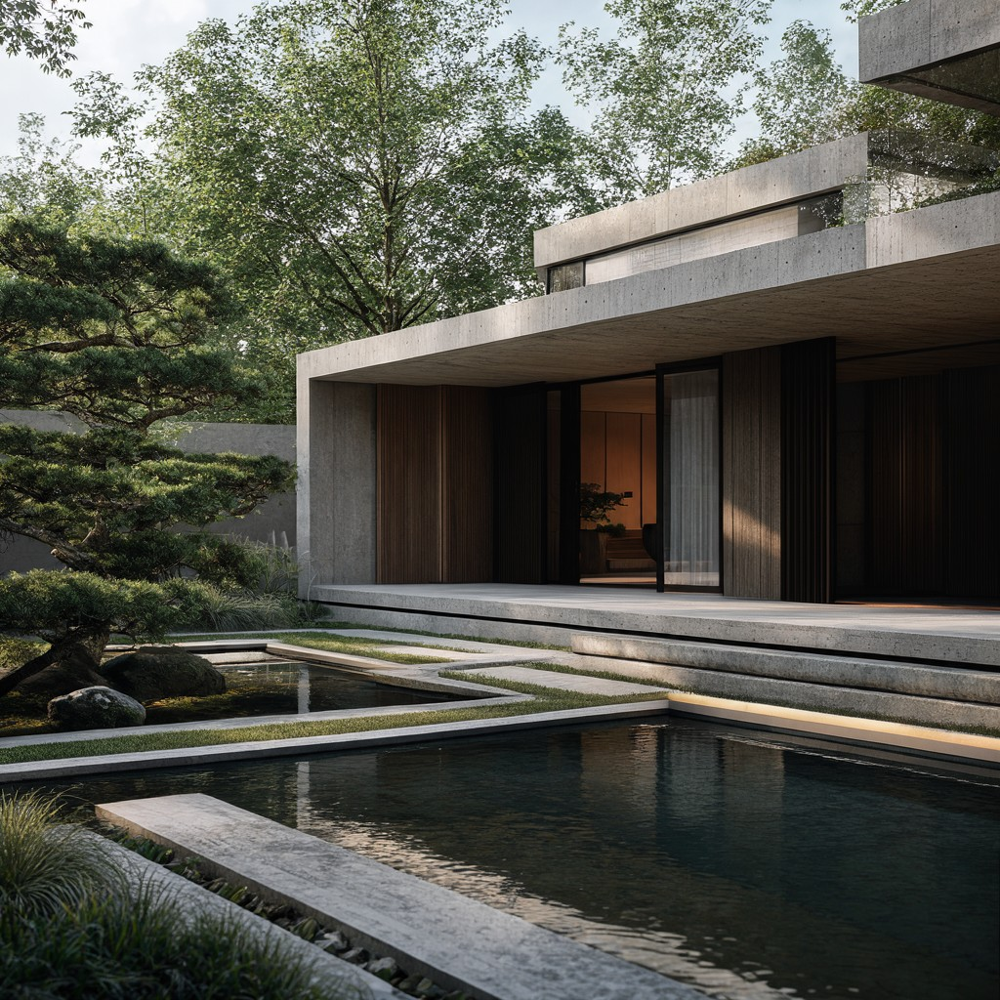
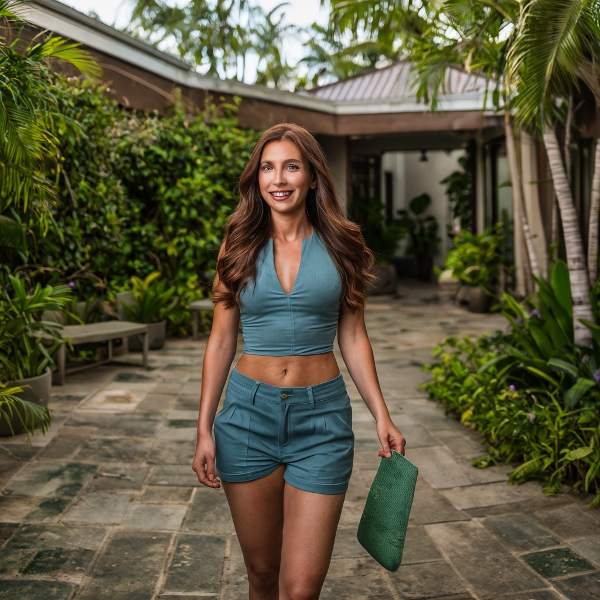
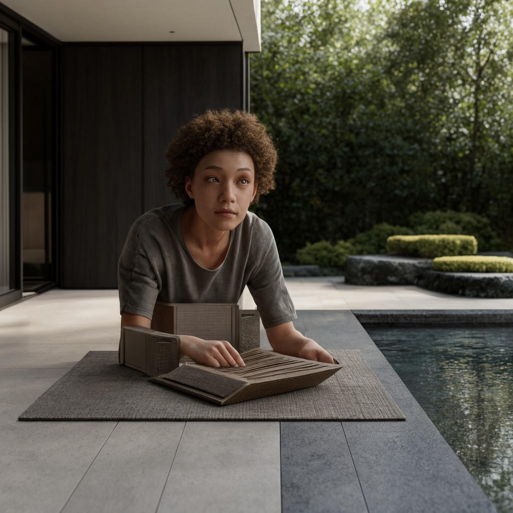

Conceptual Portfolio Project
Maison de Lumière
A cultural center designed as an instrument for light — galleries, auditorium, and gardens choreographed around illumination.
Project Overview
On a former industrial site at the confluence of the Rhône and Saône, Maison de Lumière transforms a forgotten urban fragment into a civic beacon. The center is conceived not as a building that contains light, but as an instrument that captures, filters, and choreographs it — a secular cathedral where illumination is both medium and message.
The program is distributed across three interconnected volumes: the Gallery Wing, the Auditorium, and the Garden Pavilion. Each volume is a distinct response to its solar orientation. The Gallery Wing, facing north, receives consistent diffuse light ideal for art — its sawtooth roof harvests zenithal daylight while excluding direct sun. The Auditorium, buried partially in the earth, creates a dark chamber for projection and performance, its entrance a dramatic incision of light. The Garden Pavilion, transparent and lightweight, dissolves into the landscape, framing the river confluence.
Materiality serves the light. Pale limestone — quarried from the Beaujolais hills — reflects and diffuses. Board-formed concrete absorbs and modulates. Low-iron glass transmits without green cast. Perforated bronze screens filter western sun into geometric patterns that move across floors throughout the day. At night, the building inverts: the Gallery Wing glows softly from within, the Auditorium reveals its gold-leafed interior, the Garden Pavilion becomes a lantern in the park.
Design Concept
Choreographing illumination
Light is not a given — it is designed. The concept treats the sun's path as a primary design parameter, equal to program and structure. Every aperture, every surface, every volume is calibrated to a specific quality of light at a specific time of day and year.
The Gallery Wing's sawtooth roof is parametrically optimized for Lyon's latitude (45°45'N). Each tooth's angle, height, and spacing are calculated to admit maximum diffuse north light while excluding direct sun at the summer solstice. The result: galleries illuminated by a consistent, shadowless glow — 300 to 500 lux — without artificial supplementation for 85% of operating hours.
The Auditorium is a counterpoint: a room of controlled darkness. Its geometry is derived from acoustic modeling — a faceted interior of gold-leafed plaster that focuses sound while reflecting a warm, dim glow. A single shaft of light penetrates the space at solar noon on the equinox, a yearly ritual marking the building's alignment with the cosmos.
The Garden Pavilion is a test of transparency: a minimal steel frame supporting floor-to-ceiling glass, its roof a thin plane of water that mirrors the sky. The water sheet acts as a thermal buffer and a light reflector, bouncing dappled patterns into the pavilion. At night, submerged LEDs transform the roof into a luminous field responsive to wind and rain.
The sculpture garden extends the choreography outdoors. Plinths are positioned to catch specific solar events: one illuminated at winter solstice sunrise, another at summer solstice sunset. The garden becomes a calendar, its artworks participating in the celestial rhythm.

Image Gallery
Spaces in detail






Project Information
Credits & Details
Project Team
- Lead Architect
- Isabelle Moreau
- Project Architect
- Thomas Andersson
- Lighting Design Lead
- Akari Studio
- Structural Engineer
- Bureau d'Études Rhône-Alpes
- Acoustic Consultant
- Müller-BBM
- Landscape Design
- Atelier Paysage Confluence
- Daylighting Simulation
- Transsolar Energietechnik
- Photography (Conceptual)
- LUMORA Visualization Team
Project Data
- Site Area
- 12,000 m² (former industrial)
- Built Area
- 8,500 m²
- Sculpture Garden
- 2,000 m²
- Levels
- Gallery: 3; Auditorium: 2 below grade; Pavilion: 1
- Structure
- Concrete cores, steel frame, limestone cladding
- Sustainability
- Daylight autonomy 85%, geothermal, photovoltaic glass, rainwater harvesting, brownfield remediation
- Design Phase
- Concept Design (RIBA Stage 2)
Disclaimer: Maison de Lumière is a conceptual portfolio project created by LUMORA for demonstration purposes. It is not a completed client commission. All images are conceptual visualizations. Project details, team credits, and specifications are fictional.